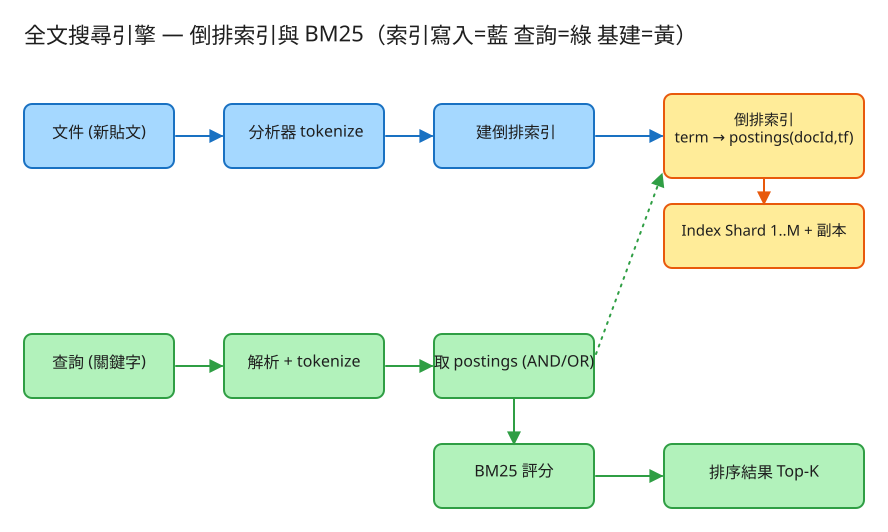

G 搜尋/索引 建議 46 分鐘 Design a Full-text Search Engine
AND（含全部詞）、OR（含任一詞）、片語查詢 "exact phrase"。LIKE '%word%' 差在哪？」 — LIKE 要掃全表（O(N) 且無法用一般索引）、不能依相關性排序、不能處理大小寫/分詞/多詞。全文搜尋靠倒排索引把「詞 → 文件」預先建好，查詢變成 O(命中數)，並能用 TF-IDF / BM25 排序。
| 指標 | 假設 | 推算 |
|---|---|---|
| 新貼文（寫） | 5 億/日 | ~5,800 寫 QPS（峰值 ×3 ≈ 1.7 萬） |
| 搜尋（讀） | 2 億次查詢/日 | ~2,300 讀 QPS（峰值 ≈ 7,000） |
| 單篇大小 | 貼文 ~300 bytes | 5 億×300B ≈ 150 GB/日 原文 |
| 倒排索引大小 | 索引約原文 0.3～0.5× | ~50～75 GB/日新增索引 |
| 詞典（term dictionary） | 不同詞數有上限（語言） | 數百萬～數千萬個 term，可常駐記憶體 |
# 索引文件（寫）
POST /api/v1/documents
Body: { "title": "...", "body": "...", "author": "...", "ts": 1717200000 }
→ 201 { "id": 12345 }
# 搜尋（讀，高頻）
GET /api/v1/search?q=inverted+index&op=and&page=1&size=10
→ 200 {
"total": 42,
"results": [
{ "id": 12345, "score": 7.83, "title": "...", "highlight": ["...<em>index</em>..."] },
...
]
}
# 片語查詢（需位置索引）
GET /api/v1/search?q="full text search"
# 倒排索引（核心）：term → postings list
postings:
"index" → [ {docId:1, tf:3, pos:[5,12,40]}, {docId:7, tf:1, pos:[2]} ]
"search" → [ {docId:1, tf:2}, {docId:3, tf:5}, {docId:7, tf:1} ]
# ↑ tf=term frequency（該詞在該文件出現幾次）；pos 供片語查詢
# 詞典 term dictionary：term → df（含此詞的文件數）+ postings 位置指標
dict:
"index" → { df: 2, ptr: ... }
# 文件儲存 doc store：docId → 原文與 metadata（供回顯/highlight）
docs:
1 → { title, body, author, ts, len } # len=文件詞數，BM25 要用
# 全集統計
stats: { N: 文件總數, avgdl: 平均文件長度 }
✏️ 用 Excalidraw 開啟編輯（diagram.excalidraw） 寫(新貼文) ─▶ Ingest ─▶ 分析器(tokenize) ─▶ 建倒排索引 ─▶ Index Shard 1..M（含副本）
▲
讀(查詢) ──▶ Query 解析 ─▶ scatter 到各 shard ─▶ 各 shard 取 postings + BM25 評分
│
└─▶ gather 合併、全域排序 ─▶ Top-K 回傳核心是 term → postings list。postings 依 docId 排序，便於做交集（AND）時雙指標歸併；常用 delta 編碼 + 壓縮（如 VByte）省空間。詞典（term dictionary）通常用 Trie / FST 存，可常駐記憶體。
idf(t) = log( (N - df + 0.5) / (df + 0.5) + 1 )
score(t) = idf(t) · ( tf·(k1+1) ) / ( tf + k1·(1 - b + b·dl/avgdl) )
查詢總分 = Σ score(t) （t 為各 query term）dl/avgdl 做文件長度正規化，公平對待長短文。AND = 各 query term 的 postings 取交集（雙指標歸併，因 postings 已排序）；OR = 取聯集。命中候選集出來後，一律用 BM25 排序。
"full text search" 要連續出現 → postings 需記每個詞的位置(position)，比對時檢查位置是否相鄰（postext = posfull+1…）。代價是索引變大。
stemming（running→run、searches→search）讓查詢與文件詞形一致；stopwords（the/a/is）幾乎無鑑別度，可在分析階段移除以省索引與雜訊（但片語查詢時要小心被去掉）。
| 階段 | 瓶頸 | 對策 |
|---|---|---|
| 單機索引 | 記憶體 / 容量裝不下 | 依 docId 或 term 雜湊分片(shard) |
| 查詢延遲 | 分片多、要查全部 | scatter-gather：併發查各 shard，gather 合併 Top-K |
| 新貼文要快被搜到 | 整段重建索引太慢 | 近即時 refresh：寫入小段 segment、定期 refresh（如 1s）；背景 merge |
| 熱門查詢重複算 | 同 query 一直重算 | 快取熱門 query 的結果（注意新文件造成失效） |
| 讀吞吐 | 查詢 QPS 高 | 每 shard 多副本(replica)分攤讀，兼顧高可用 |
LIKE 精確子字串但無排序、且慢；全文搜尋給「最相關」的排序，是模糊但有用的結果。本題 demo 著重於搜尋引擎的核心邏輯（也是面試真正的考點），可實際用 PHP 內建伺服器跑起來：
src/InvertedIndex.php 分析器 tokenize（小寫化 + 切詞 + 可選 stopwords）、倒排索引 term → (docId → tf)、BM25 排序（k1=1.2, b=0.75）、布林 AND/OR 查詢、索引 JSON 持久化。public/index.php 路由：GET /（搜尋框 + 選 AND/OR + 列出依分數排序的結果與命中詞）、POST /api/doc（加文件）、GET /api/search?q=&op=and|or；預設塞幾筆範例貼文。# 啟動
cd demo
php -S localhost:8026 -t public
# 瀏覽器開 http://localhost:8026 搜尋「inverted index」，切 AND/OR 看排序差異Elasticsearch / Lucene，查詢與排序語意一致。